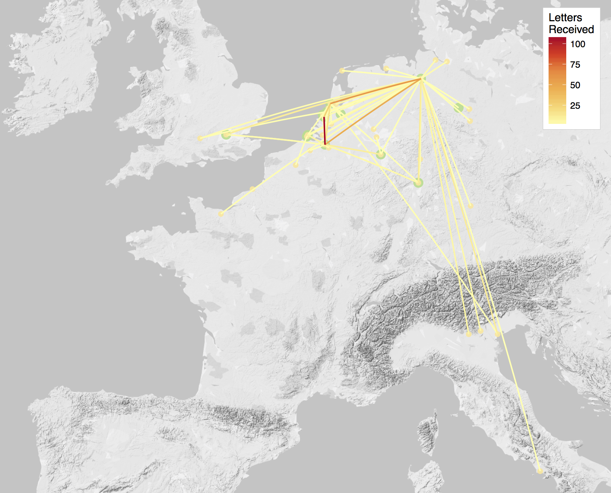

The Correspondence Network of Daniel van der Meulen, 1578–1591

Visualizations
Background to Daniel van der Meulen
Long-distance trade in the early modern period could not be conducted without correspondence networks and the exchange of letters. Merchants continued to travel in order to manage their affairs, but elite merchants rarely if ever travelled with their own goods. Instead of escorting goods from place to place, merchants organized and supervised the purchase, transportation, and sale of goods through correspondence with factors spread throughout the trade routes of Europe and beyond. This more sedentary system of exchange enabled the rapid growth of trade on an individual and European-wide basis, but it also necessitated that merchants create and maintain wide networks of competent and trustworthy correspondents willing and able to follow the directions of merchants who might be many hundreds of miles away.
Daniel van der Meulen (1554–1600), the fifth child and youngest son of Jan van der Meulen and Elizabeth Zeghers, was born in Antwerp in 1554. The Van der Meulens participated in regional trade from Antwerp, mainly with the fairs in Frankfurt and Strassbourg. The prospects of the Van der Meulens improved over the course of Daniel’s childhood, especially after Daniel’s mother took over management of the family’s trading activities following the death of her husband around 1563. In the 1580s, Daniel and his older brother Andries both married into the mercantile elite of Antwerp, enabling the Van der Meulens to invest in long-distance trade. Closely associated with the rebel side of the Dutch Revolt, the Van der Meulens left Antwerp in 1585 after the city fell to Spanish forces. Daniel first spent six years in Bremen before relocating to the university city of Leiden in September 1591. By the time of Daniel’s death from the plague in 1600, his trading activities had expanded well beyond the European continent to involve the western coast of Africa and exploratory ventures to the Indies that predated the founding of the Dutch East Indies Company.
The large collection of approximately 6,600 letters that Daniel van der Meulen received between 1578 and 1600 — housed in the Daniel van der Meulen Archive at the municipal archive in Leiden — provides a rare opportunity to investigate the development of a mercantile correspondence network at an early stage in the maturation of the Atlantic economy. The collection can be divided into two periods: before and after Daniel’s move to Leiden in 1591. From 1578 — the date of the first letter addressed to Daniel extant in the archive — until the end of 1591 Daniel received 442 letters. After moving to Leiden, Daniel became more independent from his siblings and developed a much more robust and active correspondence network, receiving well over 6,000 letters in a period of just under nine years. The current state of the project incorporates the letters sent to Daniel up to the end of 1591, but data entry on the remaining letters is underway.
Methodology
This project uses the R programming language to analyze and visualize Daniel’s correspondence network. The above map of the letters from 1578–1591 provides an example. In addition to static maps such as the one above, the project will also include interactive maps that enable the viewer to investigate the data on their own. See the links to some of the visualizations above. Further analysis and visualizations will be described on the blog. In addition, work is underway on building a website dedicated to the analysis of Daniel’s correspondence network.
The contents of this project are under active development. You can check out the GitHub page to see the progress. Feedback on the project is welcome. I can be reached via email, Twitter, or through an issue on GitHub.